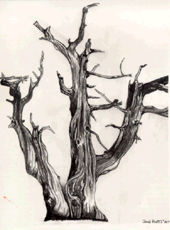

Student Project
Jared

Bristle Cone Pine trees are all twisted and gnarled up. Looking at these trees makes me feel, in one way, like that is how life is, in that life is all twisted up, and none of these trees are the same, like as people also aren't the same. To me they represent how the people live through all of the twists and turns of life until you reach the peak, or top of the tree that makes me think of how far you progress in life. In another way it makes me just stare and wonder how this tree came to be, and how different from other trees it is.
-Jared
c. Jared
ALbert Lowry High School
Winnemucca, Nevada USA
Pencil on Paper 9 "X12"
Bristlecone Pine
Latin Name: Pinus Aristata
Age: 4,600 years
Circumference: TBA
Location: Great Basin National Park
Ely, Nevada
 Return to Main Page
Return to Main Page
June Julian jj68@nyu.edu